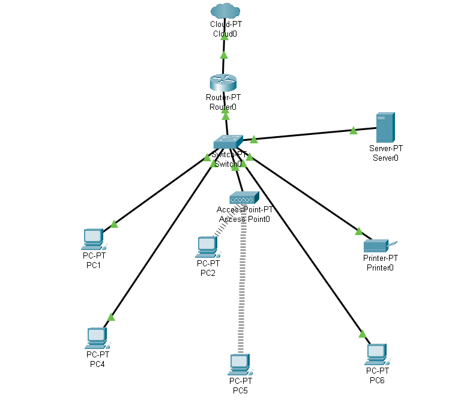
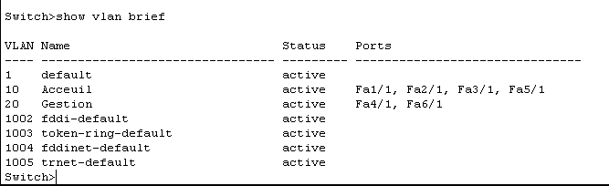
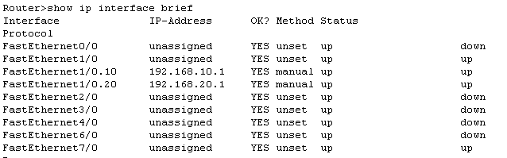
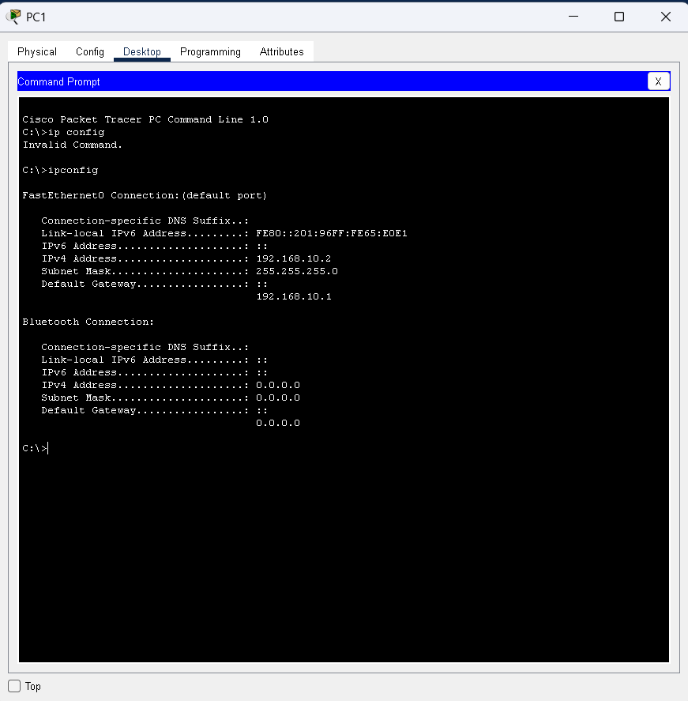
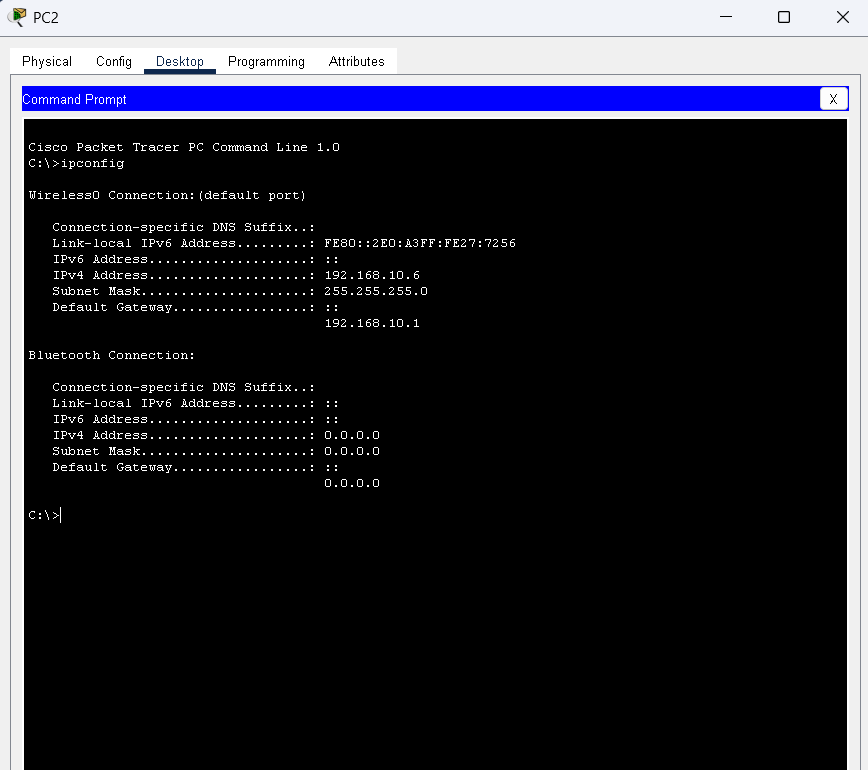
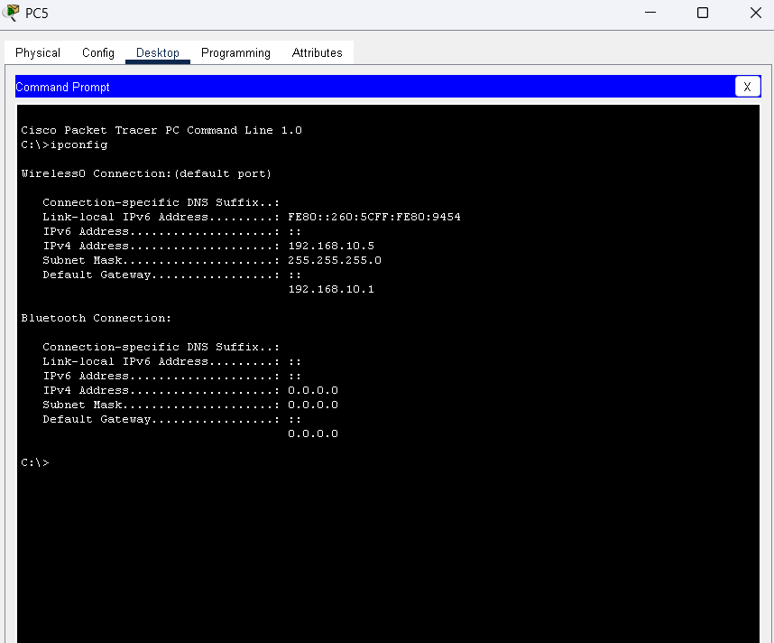
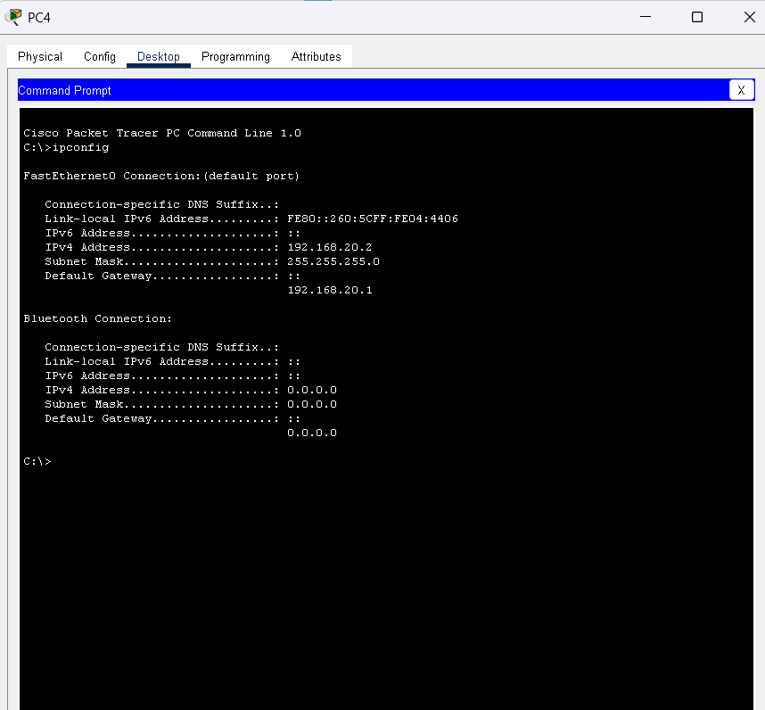
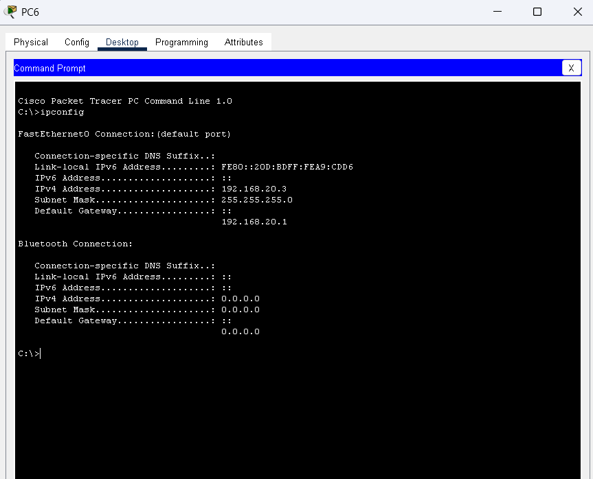
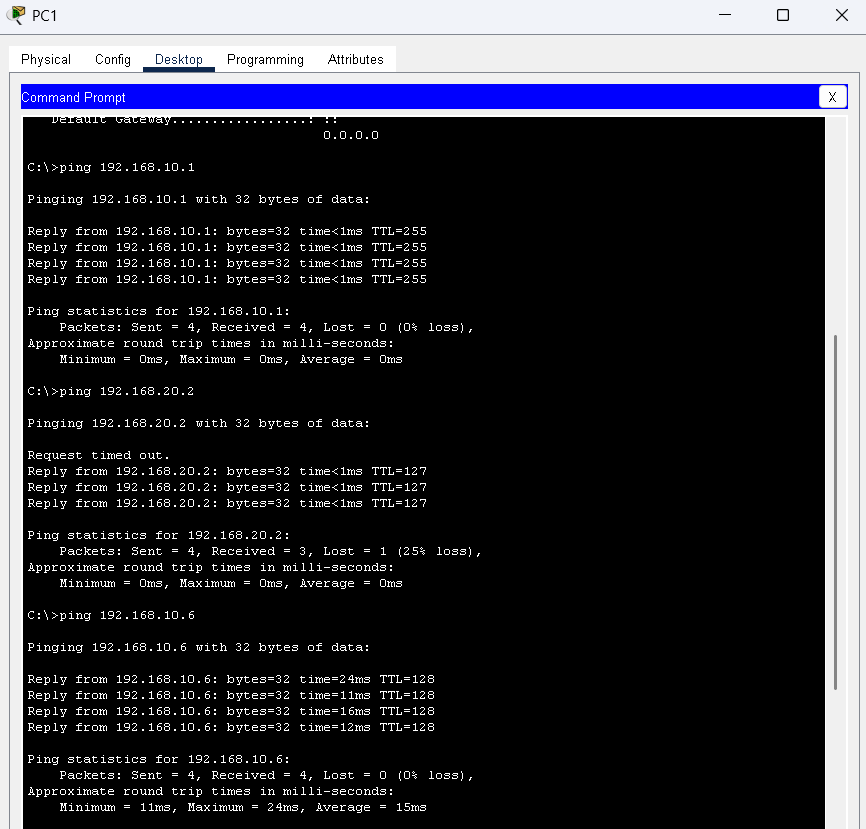
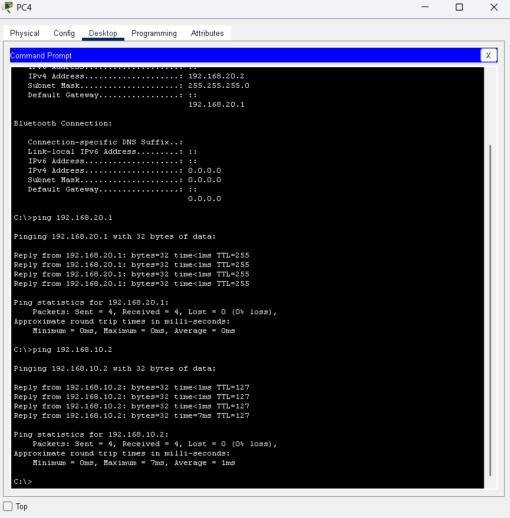

Infrastructure réseau segmentée pour un cabinet de conseil
Aness Khenichil · BTS SIO option SISR · ESUP Paris
Le cabinet fictif StratAdvise accueille des visiteurs et emploie du personnel sur le même site.
Les deux populations ne doivent pas partager le même réseau.

| VLAN | Réseau | Passerelle (routeur) | Ports du commutateur | Postes |
|---|---|---|---|---|
| 10 · Accueil | 192.168.10.0/24 | 192.168.10.1 · Fa1/0.10 | Fa1/1, Fa2/1, Fa3/1, Fa5/1 | PC1 .2 · PC2 .6 (Wi-Fi) · PC5 .5 (Wi-Fi) |
| 20 · Gestion | 192.168.20.0/24 | 192.168.20.1 · Fa1/0.20 | Fa4/1, Fa6/1 | PC4 .2 · PC6 .3 |
Masque 255.255.255.0 pour les deux réseaux. Les valeurs sont relevées sur les captures des équipements.

Vérification avec show vlan brief : chaque port est rattaché au bon VLAN.
Fa1/0) découpée en sous-interfacesFa1/0.10 : 192.168.10.1, passerelle du VLAN 10Fa1/0.20 : 192.168.20.1, passerelle du VLAN 20Vérification avec show ip interface brief : les deux sous-interfaces sont up.








| Test | Depuis | Vers | Résultat |
|---|---|---|---|
| Passerelle | PC1 | 192.168.10.1 | 4/4 |
| Même VLAN (Wi-Fi) | PC1 | PC2 · 192.168.10.6 | 4/4 |
| Inter-VLAN | PC1 | PC4 · 192.168.20.2 | 3/4* |
| Passerelle | PC4 | 192.168.20.1 | 4/4 |
| Inter-VLAN | PC4 | PC1 · 192.168.10.2 | 4/4 |
* Le premier paquet est perdu le temps de la résolution ARP, ce qui est normal. Le TTL de 127 confirme le passage par le routeur.
show vlan brief, show ip interface brief, ipconfig, ping